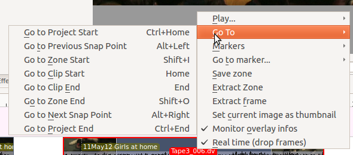
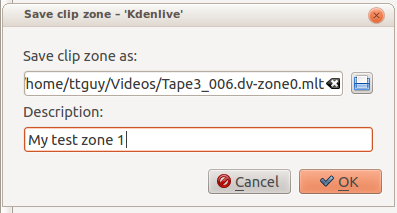
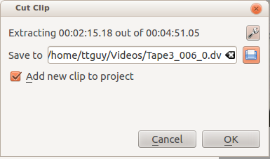

Clip Monitor - Right Click Menu¶
Contents
These are the menu items that are available when you right click a clip in the Monitors. These actions effect the clip that is currently selected in the View>Project Tree. Similar menu items are available from a Right click menu in the Project monitor. However project monitor menu items effect the currently selected clip on the timeline.
Play…¶
Play¶
Plays the clip currently selected in the project tree
Play Zone¶
Plays the current zone and stops. (See Monitors for info about what a Zone is)
Loop Zone¶
Plays the current zone in a continuous loop. (See Monitors for info about what a Zone is)
Go To¶
Go to Project Start¶
When this item is selected from Clip Monitor it goes the beginning of the clip. (When selected in project monitor it goes to the beginning of the project)
Go to Previous Snap Point¶
Moves the clip position to the previous editing Point. Snap points are sections in clips that other clips snap to when “Snap” is turned on.
Snap points include markers, zone in-points, zone out-points, guides, transition start points etc
Go to Zone Start¶
Goes to the start of the Zone. (See Monitors for info about what a Zone is)
Go to Clip Start¶
Not working. Use Go To Project Start to make the clip monitor move to start of the clip.
Go to Clip End¶
Not working. Use Go To Project End to make the clip monitor move to end of the clip.
Go to Zone End¶
Goes to the end of the Zone. (See Monitors for info about what a Zone is)
Go to Next Snap Point¶
Moves the clip position to the next editing Point. Snap points are sections in clips that other clips snap to when “Snap” is turned on.
Snap points include markers, zone in-points, zone out-points, guides, transition start points etc
Go to Project End¶
When this item is selected from Clip Monitor it goes the end of the clip. (When selected in project monitor it goes to the end of the project)
Markers¶
Add Marker¶
Adds a new Clips into the clip at the current time point.
Edit Marker¶
Brings up a dialog where you can edit the Clips that is at the current time point. Use Go to marker to put the monitor at the marker you want to edit.
Delete Marker¶
Deletes the Clips that is a the current timepoint. Use Go to marker to put the monitor at the marker you want to delete.
Delete All Markers¶
Deletes all the Clips from the current clip.
Go to marker…¶
Same a Go to Marker Clip Monitor - Right Click Menu.
Go to marker…¶
The menu item pops out a list of existing Clips to select from. When one is selected the Clip monitor moves to that marker.
Save zone¶
This brings up the Save Zone dialog
This causes the current zone (see Monitors) to be saved as a .mlt file. This is a MLT video playlist file which is an xml format file describing the zone that we saved.
You can then load the .mlt files as clips into the project monitor and edit them like any other clip.
Extract Zone¶
This brings up the Cut Clip dialog which appears to be setup to extract the zone into a new file and add it to the project tree.
On the authors 0.9.2 and 0.9.5 version of Kdenlive this feature is broken for .dv format clips at least. It does work for .mp4 type clips. However, the accuracy of the cuts on the clip is way out.
ffmpeg version 0.8.3-4:0.8.3-0ubuntu0.12.04.1, Copyright (c) 2000-2012 the Libav developers
built on Jun 12 2012 16:37:58 with gcc 4.6.3
[dv @ 0x9d71480] Can't initialize DV format!
Make sure that you supply exactly two streams:
video: 25fps or 29.97fps, audio: 2ch/48kHz/PCM
(50Mbps allows an optional second audio stream)
Output #0, dv, to '/home/ttguy/Videos/Tape3_006_0.dv':
Metadata:
encoder : Lavf53.21.0
Stream #0.0: Video: dvvideo, yuv420p, 720x576 [PAR 64:45 DAR 16:9], q=2-31, 28800 kb/s, 90k tbn, 25 tbc
Stream #0.1: Audio: pcm_s16le, 32000 Hz, 2 channels, 1024 kb/s
Stream mapping:
Stream #0.0 -> #0.0
Stream #0.1 -> #0.1
Could not write header for output file #0 (incorrect codec parameters ?)
Extract frame¶
Extracts the frame currently in the clip monitor as a .PNG image which you can save to the file system.
Set current image as thumbnail¶
This will change the thumbnail that represents this clip in the project tree to the frame that is currently selected in the clip monitor.
Monitor overlay infos¶
???
Real time (drop frames)¶
Setting this to the Checked state means the clip monitor will drop frames during playback to ensure the clip plays in real time. This does not effect the final rendered file - it just effect how the clip appears when being previewed in the clip monitor